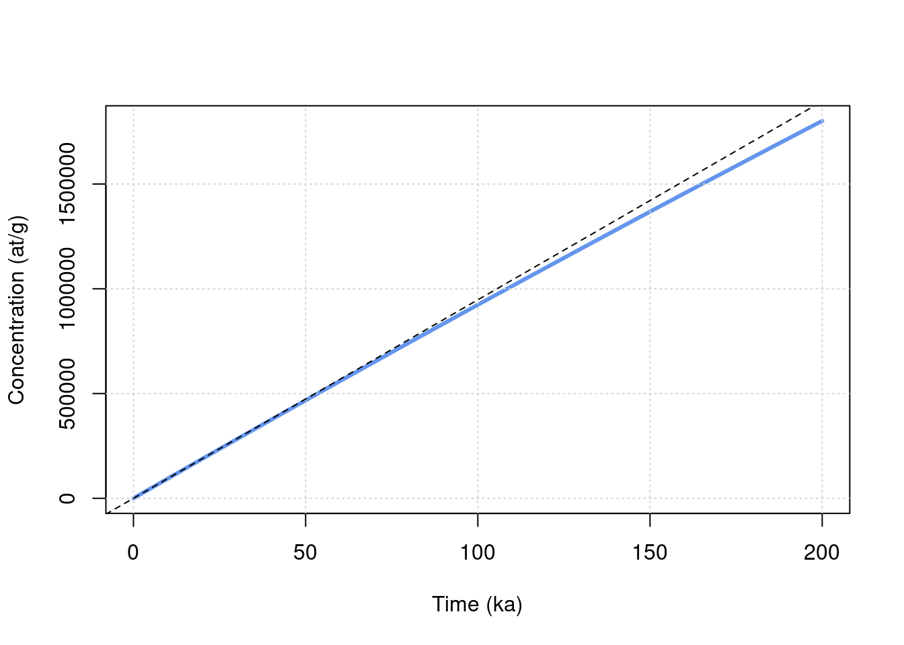
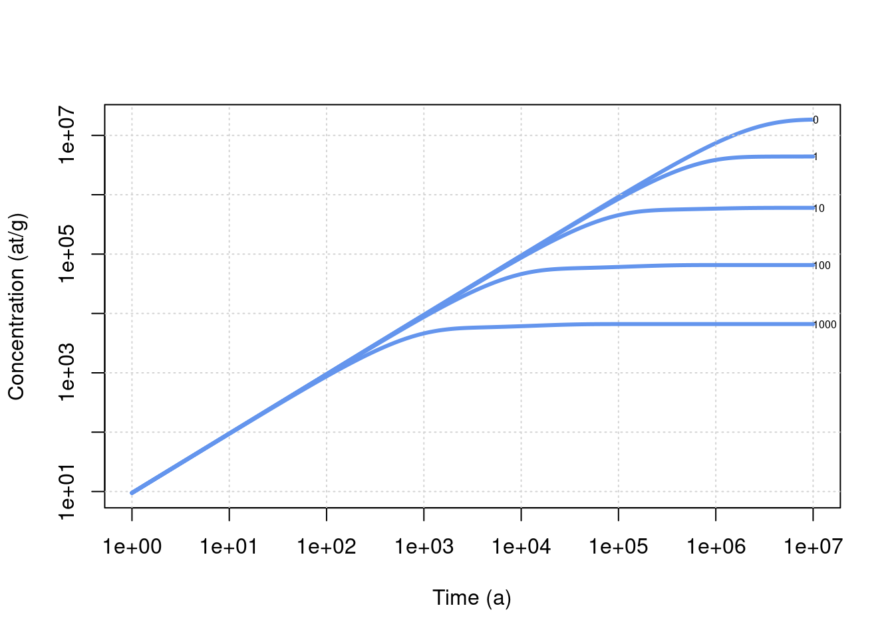

3 Exploring TCN build up at the surface
We are going to consider simple computations of concentration under various conditions in terms of erosion, depth or age. This will be done using an Eulerian point of view, which is the most straightforward and fastest way to perform such computation. In this case the quantity of interest (concentration) is computed at fixed depths below the surface, while the exhumed material is moving through this reference frame during its trajectory toward the surface. More details on the differences between Eulerian and Lagrangian approaches, and their applications to complex exposition/denudation histories, will be presented later.
Note that interpreting measured concentrations in terms of end-member situations of pure exposure or steady-state denudation is often done with online calculators (Balco et al. (2008),Marrero et al. (2016),Martin et al. (2017)). Those calculators allow to perform very accurate computations of age or denudation rate, but one should always be careful about the underlying hypotheses (no erosion, steady state achieved, etc …) when interpreting measured concentrations and always think about how TCN are accumulating in the sampled material.
The goal of this activity is to explore this behavior, using simple approaches.
3.1 Background
The relevant general equation is the following,
\[\begin{equation} C=C_0e^{-\lambda t} + \sum_i \frac{P_i}{\frac{\rho \varepsilon}{\Lambda_i}+\lambda}e^{\frac{-\rho z}{\Lambda_i}}(1-e^{-(\frac{\rho \varepsilon}{\Lambda_i}+\lambda)t}) \tag{3.1} \end{equation}\]
with the following variables and parameters,
- \(C\) the concentration (as a function of time \(t\) and depth \(z\))
- \(C_0\) the inherited concentration
- \(\lambda\) the decay constant for the considered nuclide
- \(P_i\) the scaled surface production rate for the nuclide of interest and the \(i\)-th production pathway (spallation, stopped muons, fast muons)
- \(\rho\) the density of the medium
- \(\Lambda_i\) the attenuation length for the particules of the \(i\)-th production pathway
- \(\varepsilon\) surface denudation
In order to stick with usual conventions in the following time \(t\) will be measured in years (a), the unit of length will be cm and the depths (\(z\)) will be expressed in g/cm\(^2\) (i.e. actual depth \(\times \rho\)).
Note two keys limitations of this representation :
- it does not allow to account for time variations of production rates (at least in its most straightforward implementation), so we will mostly using the st scaling
- it assumes exponential evolution of production with depth, which is clearly not the case for low energy neutrons (figure 2b from Gosse and Phillips (2001)) and is questionable in some situations for muons (Balco (2017))
3.2 Set up of the calculations
We should introduce some of the basic parameters we are going to use for the computation.
For easy reference a set of data for parameters of interest is included in the TCNtools package.
- a vector (
Lambda) with the attenuation lengths for different particles (in g/cm\(^2\))- neutrons for spallation reactions \(\Lambda_{spal}\)
- stopping muons \(\Lambda_{stop}\)
- fast muons \(\Lambda_{fast}\)
- a vector (
prm) with the SLHL production rates (in at/g/a), in this case for the st scaling scheme (Stone (2000)), and decay constant \(\lambda\) (in 1/a) for the nuclides of interest. Note that this will need to be modified when using other scaling schemes.
Note that these often used SLHL values are defined for convenience, most calculators for exposure age work directly with the production rate value at calibration sites, and that they are always relative to the scaling scheme used (Borchers et al. (2016)).
We can first load the attenuation length data (g/cm\(^2\)).
Documentation of this dataset is accessible by typing ?Lambda in the R console.
Code
data(Lambda) # we load a vector containing the attenuation length into the environment
print(Lambda)## Lspal Lstop Lfast
## 160 1500 4320Code
rho = 2.7 # we also define the density (g/cm3)Some production and decay parameters can also be loaded.
Documentation of this dataset is accessible with ?prm.
Code
data(prm) # we load a matrix containing the production/decay parameters into the environment
print(prm)## Be10 Al26 C14
## Pspal 4.01000e+00 2.793000e+01 1.224000e+01
## Pstop 1.20000e-02 8.400000e-01 3.310000e+00
## Pfast 3.90000e-02 8.100000e-02 0.000000e+00
## lambda 5.09667e-07 9.667325e-07 1.209681e-04We also need to define the properties of our site of interest and compute the relevant scaling parameters. As we already saw previously, this can easily be done with,
Code
altitude = 1000 # elevation in m
latitude = 45 # latitude in degrees
P = atm_pressure(alt=altitude,model="stone2000") # compute atmospheric pressure at site
S = scaling_st(P,latitude) # compute the scaling parameters according to Stone (2000)3.3 Evolution of concentration with time
To get a general overview of the behavior we are going to use directly the solv_conc_eul function, which allows to easily deal with various scenarios and configurations, using equation (3.1).
In the following chapters we will go back to the key equations to get a better sense of the importance of various parameters.
As always the documentation of the function, including its various arguments, can be obtained by typing ?solv_conc_eul in the R console.
We start by defining the various
Code
nuc = "Be10" # "Al26", "C14"
t = seq(0,200e3,length.out=1000) # a vector containing time from 0 to 100 ka by 100 a steps
z = 0 * rho # depth at which we are going to perform the calculation (cm converted to g/cm2)
C0 = 0 # inherited concentration (at/g)
ero = 0 * (100/1e6*rho) # denudation rate expressed in m/Ma and converted in g/cm2/aNow we can compute the concentration (at various times t), according to equation (3.1).
Code
C = solv_conc_eul(z,ero,t,C0,prm[,nuc],S,Lambda) # compute concentrationThen we can plot the evolution of concentration with time.
Code
plot(t/1000,C,type="l",col="cornflowerblue",lwd=3,ylab="Concentration (at/g)",xlab="Time (ka)")
grid()
# see explanation for these lines below
Prod = c(prm[1,nuc]*S$Nneutrons,prm[2,nuc]*S$Nmuons,prm[3,nuc]*S$Nmuons) # scaled production vector (defined for the sake of clarity of the expressions below)
lambda = prm[4,nuc] # radiactive decay
abline(0,sum(Prod)*1000,lty=2) # note that time is in ka on the plot
abline(h=sum(Prod/((ero/Lambda)+lambda)),lty=2)
Below you can get all the necessary code to produce the figure
Code
library("TCNtools")
data(Lambda)
data(prm)
rho = 2.7
#
altitude = 1000 # elevation in m
latitude = 45 # latitude in degrees
P = atm_pressure(alt=altitude,model="stone2000") # compute atmospheric pressure at site
S = scaling_st(P,latitude) # compute the scaling parameters according to Stone (2000)
nuc = "Be10" # "Al26", "C14"
t = seq(0,200e3,length.out=1000) # a vector containing time from 0 to 100 ka by 100 a steps
z = 0 * rho # depth at which we are going to perform the calculation (cm converted to g/cm2)
C0 = 0 # inherited concentration (at/g)
ero = 0 * (100/1e6*rho) # denudation rate expressed in m/Ma and converted in g/cm2/a
C = solv_conc_eul(z,ero,t,C0,prm[,nuc],S,Lambda) # compute concentration
plot(t/1000,C,type="l",col="cornflowerblue",lwd=3,ylab="Concentration (at/g)",xlab="Time (ka)")
grid()
# see explanation for these lines below
Prod = c(prm[1,nuc]*S$Nneutrons,prm[2,nuc]*S$Nmuons,prm[3,nuc]*S$Nmuons) # scaled production vector (defined for the sake of clarity of the expressions below)
lambda = prm[4,nuc] # radiactive decay
abline(0,sum(Prod)*1000,lty=2) # note that time is in ka on the plot
abline(h=sum(Prod/((ero/Lambda)+lambda)),lty=2)Starting with zero erosion (\(\varepsilon=0\)), corresponding to the pure exposition of a surface, we see the progressive build-up of concentration though time and the establishment of a balance between gains (production) and losses (denudation and decay) leading to the concentration plateau at steady state.
Note that two dashed lines are added to the graph,
- The first one corresponds to the production slope \(\sum_i P_i\), how much nuclide you produce and how it would accumulate if you had no radioactive decay and no denudation.
- The second one (horizontal, not visible with the initial parameters) is the maximum value of concentration when steady state is achieved : \[ C_{max}=\sum_i \frac{P_i}{\frac{\rho \varepsilon}{\Lambda_i}+\lambda} \]
- Change the maximum of the
tvector until you see the influence of radioactive decay and the plateau. - Add some inheritance (\(C_0\))
- Test the evolution with other nuclides such as \(^{26}\)Al and \(^{14}\)C (set
nuctoAl26orC14) - Modify the
eroparameter above (always keeping it is in g/cm\(^2\)/a), to see its influence on time needed to reach steady state and the final concentration
3.4 Two end-member situations
Now we are going to build a summary plot showing the influence of both exposure and denudation.
Code
nuc = "Be10" # choice of nuclide
t = 10^seq(log10(1),log10(10e6),length.out=1000) # time vector, log-spaced!
# calculation of the evolution of concentration for denudation = 0
C = solv_conc_eul(0,0,t,0,prm[,nuc],S,Lambda) # compute concentration for pure exposure
plot(t,C,type="l",col="cornflowerblue",lwd=3,ylab="Concentration (at/g)",xlab="Time (a)",log="xy")
grid()
text(max(t),max(C),0,cex=0.5,adj=0) # label the curve
# now we make the same computation for other denudation rates (using a loop)
ero = c(1,10,100,1000) # erosion vector in m/Ma
for (i in 1:length(ero)){
e = ero[i] * (100/1e6*rho) # convert denudation in g/cm2/a
C = solv_conc_eul(0,e,t,0,prm[,nuc],S,Lambda) # compute concentration for pure exposure
lines(t,C,col="cornflowerblue",lwd=3)
text(max(t),max(C),ero[i],cex=0.5,adj=0) # label the curve
}
Below you can get all the necessary code to produce the figure
Code
library("TCNtools")
data(Lambda)
data(prm)
rho = 2.7
#
altitude = 1000 # elevation in m
latitude = 45 # latitude in degrees
P = atm_pressure(alt=altitude,model="stone2000") # compute atmospheric pressure at site
S = scaling_st(P,latitude) # compute the scaling parameters according to Stone (2000)
nuc = "Be10" # choice of nuclide
t = 10^seq(log10(1),log10(10e6),length.out=1000) # time vector, log-spaced!
# calculation of the evolution of concentration for denudation = 0
C = solv_conc_eul(0,0,t,0,prm[,nuc],S,Lambda) # compute concentration for pure exposure
plot(t,C,type="l",col="cornflowerblue",lwd=3,ylab="Concentration (at/g)",xlab="Time (a)",log="xy")
grid()
text(max(t),max(C),0,cex=0.5,adj=0) # label the curve
# now we make the same computation for other denudation rates (using a loop)
ero = c(1,10,100,1000) # erosion vector in m/Ma
for (i in 1:length(ero)){
e = ero[i] * (100/1e6*rho) # convert denudation in g/cm2/a
C = solv_conc_eul(0,e,t,0,prm[,nuc],S,Lambda) # compute concentration for pure exposure
lines(t,C,col="cornflowerblue",lwd=3)
text(max(t),max(C),ero[i],cex=0.5,adj=0) # label the curve
}Note that this a log-log plot. It is probably one of the most important figure to keep in mind when analyzing TCN concentrations. It clearly shows the existence of two end-member situations when interpreting these concentrations, in terms of exposure age or denudation rates, and the transition between the two.
Think about a bit about the following points
- What are the key hypotheses made when interpreting a TCN concentration in terms of
- exposure age
- surface denudation
- Can you think of geological/geomorphological situations where these hypotheses are invalid?
- Why are the plateau concentrations so different?
- How is the time to reach the plateau changing and why?
3.5 Comparing the Eulerian and Lagrangian descriptions
This section presents a simple comparison of the Eulerian and Lagrangian approaches for the computation of cosmogenic nuclides concentration evolution in complex denudation and exposure scenarios. A nice presentation of this distinction is provided in Knudsen, Egholm, and Jansen (2019).
3.5.1 Definition of the denudation scenario
We will start from a steady state situation under constant denudation, and then apply a change in the denudation rate for a given period of time.
Code
tmax = 2e6 # duration in a
ero = 1/1.e6*100*rho # denudation rate conversion en m/Ma -> g/cm2/a
fact = 5 # change factorHere the duration of the simulation will be 2 Ma, the initial denudation rate will be 1 m/Ma, which will changed by a factor 5 at the beginning of the simulation.
3.5.2 Computation of concentrations with the Eulerian reference frame
We compute the evolution of concentrations at the surface (\(z=0\)) using an Eulerian point of view.
The calculation is very straightforward with to the solv_conc_eul function, note the use of in_ero parameter, to specify a starting denudation rate.
Code
df_e = data.frame(t = seq(0,tmax,length.out = 10000))
df_e$C10 = solv_conc_eul(0,ero*fact,df_e$t,0,prm[,"Be10"],S,Lambda,in_ero=ero)3.5.3 Computation of concentrations with the Lagrangian reference frame
Now we do the same calculation using a Lagrangian point of view, i.e. with a reference frame attached to a rock particle during its journey toward the surface as a response to denudation.
It is slightly more complicated than in the Eulerian case and is done using the solv_conc_lag function.
We first initiate a dataframe (df_l) and compute the evolution in depth z of the particle through time when it is exhumed from its initial depth (here 10 m) to the surface at a rate 5 m/Ma.
Code
df_l = data.frame(t=seq(0,tmax,length.out = 10000)) # data frame to store results
df_l$z = ero*fact*df_l$t # cumulative erosion trough time (g/cm2)
df_l$z = max(df_l$z) - df_l$z # convert into depthWe compute the steady state concentration at starting depth, using the Eulerian solver.
Code
C10_0 = solv_conc_eul(max(df_l$z),ero,Inf,0,prm[,'Be10'],S,Lambda) # starting 10Be concentrationWe then define another column in the data frame with the evolution of scaling parameters through time. It is trivial here in the case of the time-independent st scaling, but it will be highly valuable when dealing with time-dependent scalings, where the Eulerian approach is not applicable.
Code
df_l$Ssp = rep(as.numeric(S[1]),nrow(df_l)) # scaling spallation
df_l$Smu = rep(as.numeric(S[2]),nrow(df_l)) # scaling muonsThen we calculate the un-scaled production rates at depths of interest. Here again, as we use simple models of exponential decrease for production with depth, the interest of using such Lagrangian approach is not obvious. But such way of computing concentration will allow to deal with non-exponential production profiles, which might necessary in some situation for muons or low-energy neutrons.
Code
# 10Be (not scaled)
df_l$Psp10 = prm["Pspal",'Be10']*exp(-1*df_l$z/Lambda["Lspal"]) # spallation
df_l$Pmu10 = prm["Pstop",'Be10']*exp(-1*df_l$z/Lambda["Lstop"]) + prm["Pfast",'Be10']*exp(-1*df_l$z/Lambda["Lfast"]) # muonsWe can now use the solv_conc_lag function to compute the evolution of concentration through time and depth.
Code
df_l$C10 = solv_conc_lag(df_l$t,df_l$z,C10_0,df_l$Psp10,df_l$Pmu10,prm["lambda",'Be10'],cbind(df_l$Ssp,df_l$Smu),final=FALSE)3.5.4 Comparison of results
We can now plot the results of the calculations and compare the two approaches.
Code
col_e = "chartreuse"
col_l = "chocolate1"
plot(df_e$t/1e6,df_e$C10/1e6,type="l",col=col_e,lwd=2, xlim=range(df_e$t/1e6),ylim=range(df_e$C10/1e6,df_l$C10/1e6),
xlab="Time (Ma)",ylab="10Be concentration (x10e6 at/g)")
grid()
lines(df_l$t/1e6,df_l$C10/1e6,col=col_l,lwd=2)
legend("topright",c("Eulerian","Lagrangian"),lwd=2,col=c(col_e,col_l))
Below you can get all the necessary code to produce the figure
Code
library("TCNtools")
data(Lambda)
data(prm)
rho = 2.7
#
altitude = 1000 # elevation in m
latitude = 45 # latitude in degrees
P = atm_pressure(alt=altitude,model="stone2000") # compute atmospheric pressure at site
S = scaling_st(P,latitude) # compute the scaling parameters according to Stone (2000)
tmax = 2e6 # duration in a
ero = 1/1.e6*100*rho # denudation rate conversion en m/Ma -> g/cm2/a
fact = 5 # change factor
df_e = data.frame(t = seq(0,tmax,length.out = 10000))
df_e$C10 = solv_conc_eul(0,ero*fact,df_e$t,0,prm[,"Be10"],S,Lambda,in_ero=ero)
df_l = data.frame(t=seq(0,tmax,length.out = 10000)) # data frame to store results
df_l$z = ero*fact*df_l$t # cumulative erosion trough time (g/cm2)
df_l$z = max(df_l$z) - df_l$z # convert into depth
C10_0 = solv_conc_eul(max(df_l$z),ero,Inf,0,prm[,'Be10'],S,Lambda) # starting 10Be concentration
df_l$Ssp = rep(as.numeric(S[1]),nrow(df_l)) # scaling spallation
df_l$Smu = rep(as.numeric(S[2]),nrow(df_l)) # scaling muons
# 10Be (not scaled)
df_l$Psp10 = prm["Pspal",'Be10']*exp(-1*df_l$z/Lambda["Lspal"]) # spallation
df_l$Pmu10 = prm["Pstop",'Be10']*exp(-1*df_l$z/Lambda["Lstop"]) + prm["Pfast",'Be10']*exp(-1*df_l$z/Lambda["Lfast"]) # muons
df_l$C10 = solv_conc_lag(df_l$t,df_l$z,C10_0,df_l$Psp10,df_l$Pmu10,prm["lambda",'Be10'],cbind(df_l$Ssp,df_l$Smu),final=FALSE)
col_e = "chartreuse"
col_l = "chocolate1"
plot(df_e$t/1e6,df_e$C10/1e6,type="l",col=col_e,lwd=2, xlim=range(df_e$t/1e6),ylim=range(df_e$C10/1e6,df_l$C10/1e6),
xlab="Time (Ma)",ylab="10Be concentration (x10e6 at/g)")
grid()
lines(df_l$t/1e6,df_l$C10/1e6,col=col_l,lwd=2)
legend("topright",c("Eulerian","Lagrangian"),lwd=2,col=c(col_e,col_l))The Lagrangian evolution starts with a low concentration corresponding to the burial at depth of the particle at the onset of the evolution, while at the same time (\(t=0\)) we are looking at the surface with the Eulerian point of view, and then obviously observe much higher concentrations. The two descriptions converge toward the same concentration at the end of the evolution (i.e. when the lagrangian particle reaches the surface).
Try to think about various contexts and applications where the use of the Eulerian or Lagrangian appraoch could be preferred, and why.